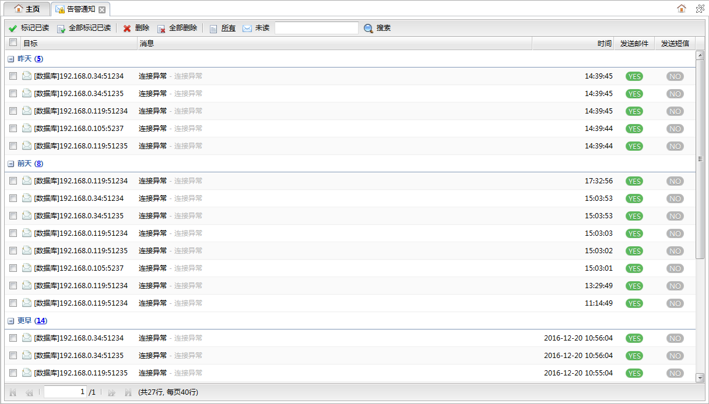
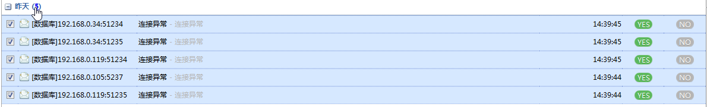
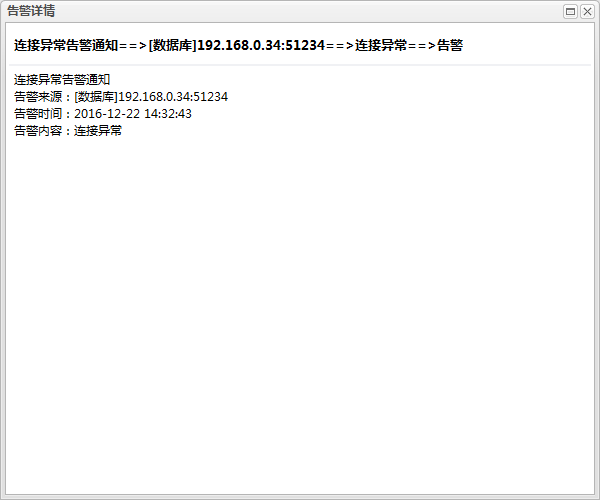

全部标记已读
全部标记已读 删除
删除
 。
。告警信息还可以指定通知到具体的用户，用户可以点击主页顶部的告警通知按钮打开告警通知面板，查看分发给自己处理的告警信息。如下图所示:

功能按钮列表| 按钮 | 说明 |
|---|---|
| 标记已读 | 将选中的告警通知标记为已读。 |
| 全部标记已读 |
将全部告警通知标记为已读。 |
| 删除 |
删除选中的告警通知。 |
| 全部删除 | 删除全部告警通知。 |
| 所有 | 列表过滤按钮，点击显示全部告警信息。 |
| 未读 | 列表过滤按钮，点击显示未处理的告警信息。 |
|
|
对告警信息列表进行目标或消息的过滤。搜索输入框中输入内容，敲下回车或者点击。 |
告警信息列表
告警信息按时间先后降序排列，且按日期分组显示。
| 字段 | 说明 |
|---|---|
| 目标 | 告警信息来源。 |
| 消息 | 告警信息内容。 |
| 时间 | 告警信息产生时间。 |
| 发送邮件 | 告警信息是否已发送邮件通知用户。表示已发送，表示未发送。 |
| 发送短信 | 告警信息是否已发送短信通知用户。表示已发送，表示未发送。 |
组标题后面统计了记录数，点击记录数可以快速选中该组的所有记录，如下图所示：

双击告警记录可以打开详细信息对话框查看详细的告警原因，如下图所示：
